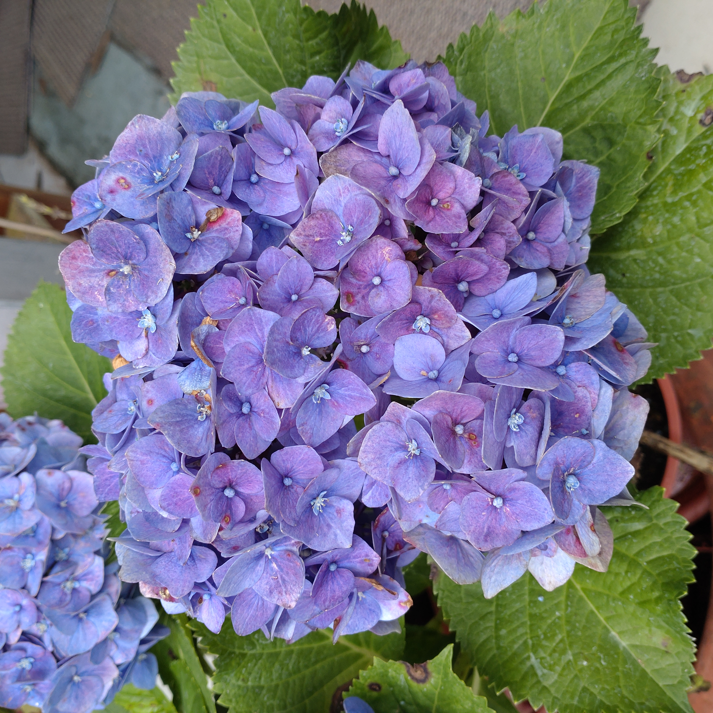
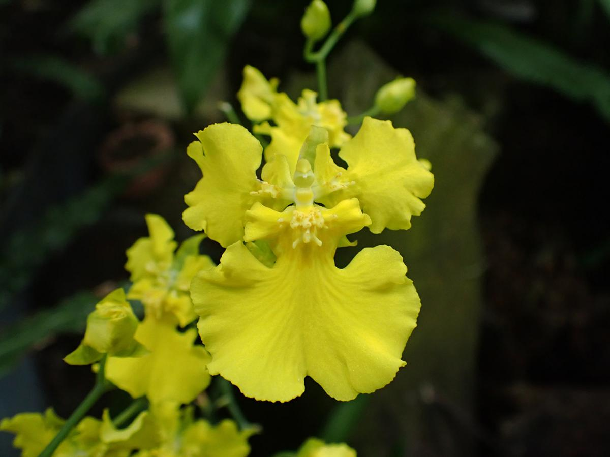

花卉介紹
繡球花
文心蘭
2024繡球花季到啦！每年5月至6月初夏季節，粉藍、粉紫、粉紅等各色錦簇花團，從陽明山竹子湖、新北萬里高家花田、雪霸休閒農場、武陵農場、明池森林遊樂區等，精選全台超過10處觀賞繡球花的推薦景點，賞花之餘，也一起解密繡球花冷知識！
文心蘭，取其優雅文質玲瓏心，又可意會又可言傳，故在本省自從最早有「文心蘭」的稱呼出現後，便沿pic2用成習，也因其花朵頗似穿著膨鬆舞裙、迎風招展婆娑起舞的女郎，而有人稱為「跳舞蘭」，在切花和盆花市場上都佔有很重要的一席之地。

